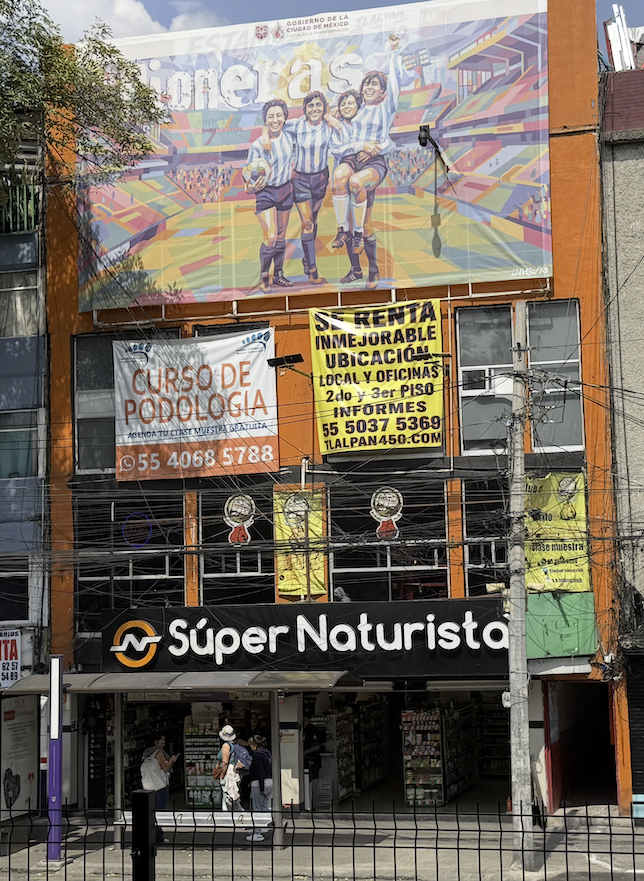
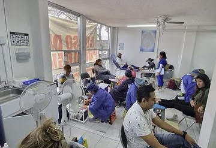
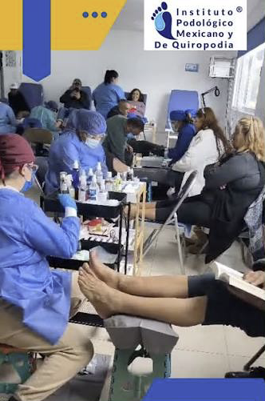
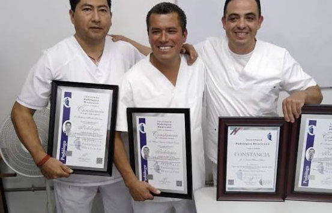
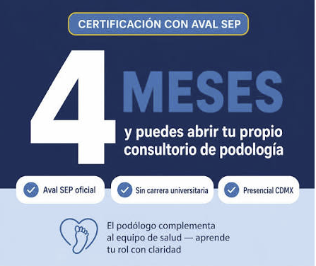
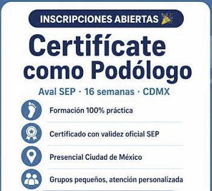
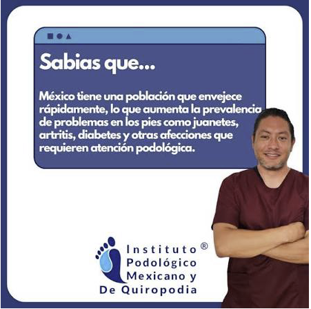

Calzada de Tlalpan 450, PB-2, Ciudad de México
Estudia podología en Tlalpan 450, frente al Metro Viaducto
Curso presencial del Instituto Podológico Mexicano. Llegas en Metro, practicas con pacientes desde la primera semana y terminas tu formación en 4 meses.

Una sede fácil de llegar desde casi toda la ciudad
Estudiar 4 meses es más fácil cuando el trayecto no te desgasta. El Instituto da clases en la planta baja de Calzada de Tlalpan 450, justo enfrente de la estación Viaducto de la Línea 2 del Metro.
Distancias desde el salón
Ordenadas de la más cercana a la más lejana.
- 0 mTlalpan 450, PB-2: tu salón, sobre Calzada de Tlalpan
- EnfrenteMetro Viaducto, Línea 2
- 30 mCalle Coruña
- 50 mCalle Santa Anita
- 200 mViaducto Río de la Piedad
- 200 mObrero Mundial
- 1 kmAvenida Xola
- 1 kmCalzada Chabacano
Línea 2: de Tasqueña a Cuatro Caminos
La línea cruza el centro de la ciudad de sur a norte. Si vives cerca de ella, llegas directo y bajas enfrente del edificio.
pasajeros al día usan la Línea 2, según datos del inmueble. Es una de las rutas con más movimiento de la ciudad.
Metrobús y avenidas principales
El edificio tiene acceso a Metrobús y está a pocos pasos de Viaducto, una de las vías rápidas que conectan el oriente y el poniente.
En planta baja
El local PB-2 está a nivel de calle. Llegas sin subir escaleras, con tu mochila y tu instrumental.
Edificio vigilado
El inmueble tiene cámaras que monitorean áreas comunes y exteriores de forma constante.
Todo lo que necesitas a la vuelta
Entre clase y práctica puedes resolver pendientes sin mover el coche ni tomar otro transporte.
Bancos:
- HSBC
- BBVA
- Santander
- Scotiabank
- Inbursa
- Banco Azteca
Comida, tiendas y farmacias:
- Vips
- Toks
- Little Caesars
- Oxxo
- 7-Eleven
- Coppel
- Farmacias del Ahorro
- Farmacias Similares
- Gasolinera Pemex
Cómo llegar
Calzada de Tlalpan 450, PB-2
Col. Viaducto Piedad, Iztacalco, Ciudad de México.
En Metro: baja en la estación Viaducto de la Línea 2. El edificio está enfrente.
Busca la lona de "Curso de Podología" en la fachada.
El Instituto Podológico Mexicano
Su meta es que más personas puedan trabajar por su cuenta en podología: en consultorio, a domicilio o en gimnasios.
Imparten las clases podólogos, médicos y ortopedistas con más de 10 años en el ramo. El curso combina teoría y práctica, y el temario incluye cómo montar tu propio consultorio.
Lo que aprendes
- Podología general e historia clínica
- Uso del instrumental y métodos de esterilización
- Anatomía de pie y pierna, piel y uñas
- Servicio podológico preventivo, paso a paso
- Biomecánica del pie, huella plantar y plantillas
- Atención del pie diabético
- Plan de negocio y proveedores para tu consultorio


Lo que incluye tu curso
- Prácticas con pacientes reales desde la primera semana
- Kit de instrumental podológico de 9 piezas
- Block de historias clínicas para podólogos
- Constancia de fin de curso
- Foto grupal de generación
Puedes inscribirte en cualquier momento del año. Los temas son independientes, así que al final ves el temario completo.
Horarios publicados por el Instituto
Entre semana
Clases martes y jueves de 10:00 a 13:00. Prácticas los miércoles de 11:00 a 14:00.
Sábados
Clases de 10:00 a 13:00. Prácticas de 13:00 a 15:00.
Confirma los horarios vigentes al pedir informes.
Lo que respalda al Instituto
formando podólogos
alumnos graduados y capacitados, según el Instituto
de curso presencial en la CDMX

Certificaciones que ofrece el Instituto
- Constancia con valor curricular ante la Secretaría del Trabajo y Previsión Social (STPS)
- Certificación que el Instituto reporta con aval de la SEP
Pide al Instituto el detalle de cada certificación y su documento de respaldo antes de inscribirte.



Preguntas frecuentes
¿Dónde son las clases?
En Calzada de Tlalpan 450, local PB-2 (planta baja), Col. Viaducto Piedad, Iztacalco, Ciudad de México. El edificio está frente a la estación Viaducto del Metro.
¿Cómo llego en transporte público?
La forma más directa es la Línea 2 del Metro: baja en Viaducto y cruza al edificio. También hay acceso a Metrobús, y Viaducto Río de la Piedad queda a unos 200 metros.
¿Cuánto dura el curso?
4 meses, equivalentes a 16 semanas de formación teórica y práctica.
¿Necesito una carrera universitaria?
No. El Instituto indica que no se requiere carrera universitaria para tomar el curso.
¿Cuándo empiezo a practicar?
Desde la primera semana. Las prácticas son con pacientes reales.
¿Puedo conocer el lugar antes de inscribirme?
Sí. Pide tu clase muestra por correo y te indican el día y la hora.
Conoce el salón antes de decidir
Escríbele al Instituto, pide tu clase muestra y ven a Calzada de Tlalpan 450, PB-2. Bajas del Metro Viaducto y ya llegaste.